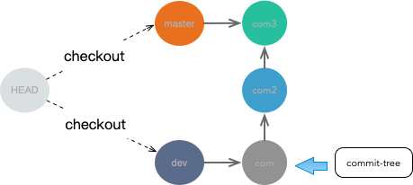

分支是一个指向提交对象的可变指针文件，在.git/refs/heads/ 目录下的引用文件，该文件中包含了该分支提交对象key
如在spring-boot中本地分支有两个,当前分支是master,那么HEAD中指向的就是master文件
➜ spring-boot git:(master) git status
On branch master
➜ .git git:(master) cat HEAD
ref: refs/heads/master
➜ spring-boot git:(master) find .git/refs/heads -type f
.git/refs/heads/origin-master
.git/refs/heads/master

分支文件创建和存放
- 存放路径
➜ spring-boot git:(aaa) find .git/refs/heads -type f
.git/refs/heads/origin-master
.git/refs/heads/aaa
.git/refs/heads/master
➜ spring-boot git:(aaa) cat .git/refs/heads/aaa
32b14f30987c4fb40d1ac69ecba47c7b876b60ce
32b14f30987c4fb40d1ac69ecba47c7b876b60ce 是该分支最后一次或者撤销到指定到提交的提交对象
如：切换分支将更新HEAD指向不同的分支文件
➜ spring-boot git:(aaa) git checkout master
Switched to branch 'master'
Your branch is up to date with 'bh/master'.
➜ spring-boot git:(master) cat .git/HEAD
ref: refs/heads/master
➜ spring-boot git:(master) git checkout aaa
Switched to branch 'aaa'
➜ spring-boot git:(aaa) cat .git/HEAD
ref: refs/heads/aaa
- git branch --set-upstream 本地分支关联远程分支，本地需要对远程分支进行 ‘pull’ 或者 'push' 的时候 需要指定当前分支对应的远程仓库分支，命令的最终修改都是针对config文件
.git git:(master) cat config
[core]
repositoryformatversion = 0
filemode = true
bare = false
logallrefupdates = true
ignorecase = true
precomposeunicode = true
[remote "origin"]
url = https://github.com/baihui/git.git
fetch = +refs/heads/*:refs/remotes/origin/*
[branch "master"]
remote = origin
merge = refs/heads/master
➜ .git git:(master)
工作流
长期分支
- 长期分支也称为稳定分支，比如只在 master 分支上保留完全稳定的代码—有可能仅仅是已经发布或即将发布的代码。他们还有一些名为 develop 或者 next 的平行分支，被用来做后续开发或者测试稳定性—这些分支不必保持绝对稳定，但是一旦达到稳定状态，它们就可以被合并入 master 分支了，稳定分支的指针总是落后于其他分支一大截。
特性分支
- 特性分支是一种短期分支，它被用来实现单一特性或其相关工作。
远程分支
远程分支创建是通过clone 或者fetch获取数据添加到你本地的数据库，并且会创建一个远程分支该分支你无法对其移动，只能通过fetch由git自动移动，同时在clone时git为你自动的创建了一个本地分支其指向与远程分支一样。
git clone 默认做了两件事情- 获取数据添加到本地git数据库中，
创建一个不能移动的远程分支 和 创建一个本地分支 两个分支指向同一个提交对象,而这个分支称为跟踪分支
跟踪分支：从一个远程跟踪分支检出一个本地分支会自动创建一个叫做 “跟踪分支”（有时候也叫做 “上游分支”）。跟踪分支是与远程分支有直接关系的本地分支。
如：
git clone https://github.com/baihui/incubator-dubbo.git
git branch -a
* master
remotes/origin/3.x-dev
remotes/origin/HEAD -> origin/master
remotes/origin/master
默认创建了两个分支master 和 origin/master
- 跟踪分支：master 是git在默认的情况下自动创建本地分支，并且它和远程分支的提交点一样
- 远程分支：origin/master是在origin/目录不存在分支文件的，它只是一个不可修改的origin/master指针
➜ incubator-dubbo git:(master) cat .git/refs/heads/master
858dee4c409e07988c095f7ea97587e495a07e4b
➜ incubator-dubbo git:(master) cat .git/refs/remotes/origin/master
cat: .git/refs/remotes/origin/master: No such file or directory
➜ incubator-dubbo git:(master) cat .git/refs/remotes/origin/HEAD
ref: refs/remotes/origin/master
跟踪分支引用对象指向了最后提交对象，而远程分支文件不存在，并且它对应的可变指针HEAD指向了一个不存在的指针，所以不可移动。但是可以使用它如：将它合并入本地分支 git merge origin/master
跟踪其他的远程分支
git checkout -b l_serverfix origin/serverfix
或者
git checkout --track origin/serverfix
设置一个本地分支跟踪远程分支
git branch -u origin/serverfix
-u 或 --set-upstream-to 等价
push/pull(推送和拉取)
- git push (remote) (branch):
推送分支
git push origin serverfix
等价于
push origin serverfix:serverfix
或者推送到指定的远程分支
git push origin serverfix:awesomebranch
pull 也会和fetch 一样拉取数据，但是它会自动将拉取的远程分支合并到前分支中